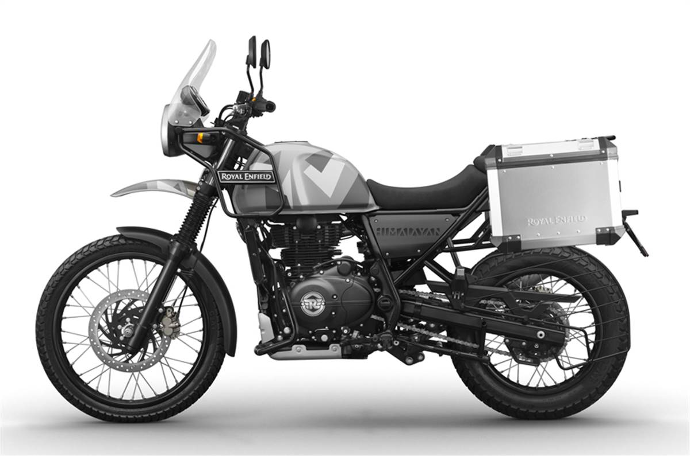
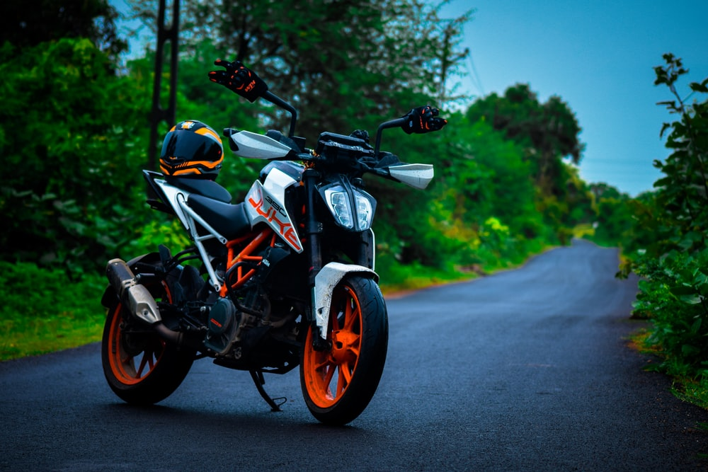
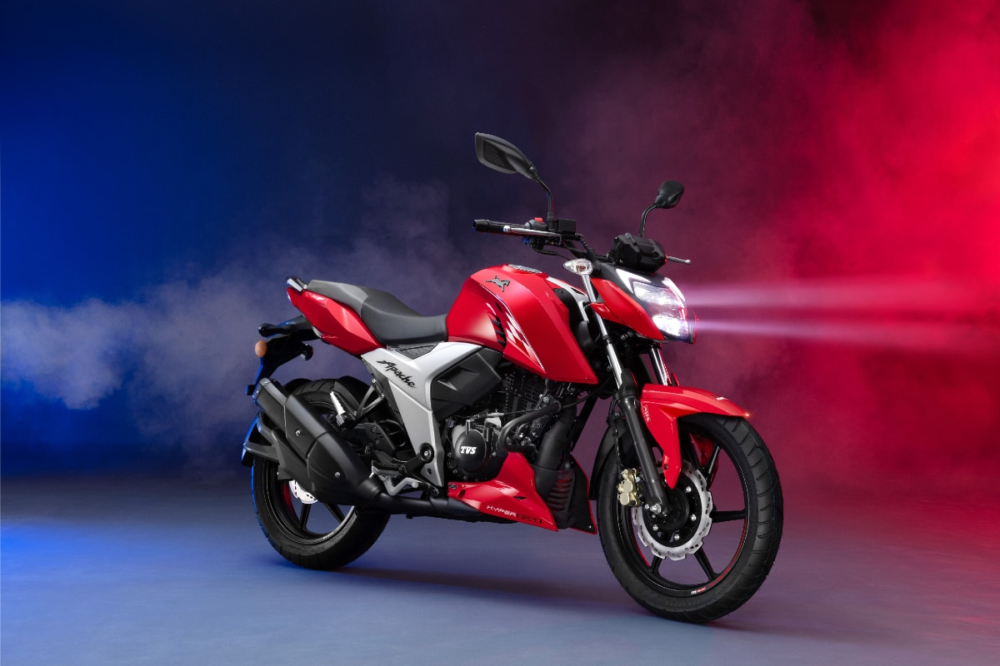

MORE DETAILS
Himalayan
The Himalayan is an Indian adventure touring motorcycle manufactured by Royal Enfield, premiering in February 2015 and launched early 2016.
MORE DETAILS

Royal Enfield Meteor 350
Royal Enfield Meteor 350 have 3 variants ranging from Rs. 1.99 Lakh to Rs. 2.15 Lakh. Meteor 350 is powered by a 1 cylinder, 349 cc, Single-Cylinder& SOHC& Air Cooled& 2 Valves& FI.
MORE DETAILS

MORE DETAILS
Duke
The KTM 200 Duke is a 199.5 cc single-cylinder standard motorcycle made by KTM since 2012. It has a four-stroke, spark-ignition liquid-cooled engine.
MORE DETAILS

TVS Apache RTR 160 4V
The TVS Apache is a brand of motorcycle made by TVS Motors since 2006. As of 2020, more than 4 million Apaches are on the road. Currently the company sells five variants of the TVS Apache.
MORE DETAILS